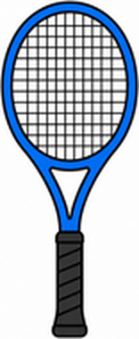
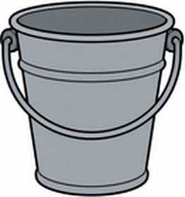

Unit 1 The Great Outdoors — 第五回｜綜合複習 After School
班級：______ 座號：____ 姓名：__________ 分數：______ / 100一、聽力測驗
老師會播放每題的錄音，請仔細聽，選出正確答案。
1. What is B going to do?
(A) eat pizza with A (B) go fishing (C) play tennis (D) do homework
2. Is B going to do homework?
(A) B is doing it now. (B) Yes, B is. (C) B doesn't know. (D) No, B isn't.
3. What does Gus have?
(A) a bat and a mitt (B) a skateboard (C) a tennis ball and a tennis racket (D) a bucket
4. What does B say?
(A) B needs an umbrella. (B) B doesn't know. (C) B knows. (D) B hopes it rains.
5. Who is he going to play with?
(A) his brother (B) Gus (C) Sue (D) May
二、是非題
閱讀短文，判斷句子是 True（對）或 False（錯）。
Today after school, Gus is going to play tennis with May. He has a tennis racket and a tennis ball. Sue isn't going to play tennis. She is going to do her homework. The weather is going to be warm, so nobody needs an umbrella.
6. Gus is going to play tennis with Sue. （ T ／ F ）
7. Gus has a racket. （ T ／ F ）
8. Sue is going to do her homework. （ T ／ F ）
9. The weather is going to be cold. （ T ／ F ）
10. Everybody needs an umbrella. （ T ／ F ）
三、選擇題
選出最適合的答案。
11. A: Are you going to play tennis with Gus? B: ____
(A) No, I don't. (B) Yes, I do. (C) Yes, he does. (D) No, I'm not.
12. I'm going to eat pizza ____ you.
(A) with (B) for (C) on (D) at
13. A: What are you going to do after school? B: I'm going to ____ my homework.
(A) eat (B) go (C) play (D) do
14. Ask the ____. He knows the weather.
(A) mitt (B) weatherman (C) helmet (D) bucket
15. The ____ says it's going to snow.
(A) towel (B) racket (C) newspaper (D) tent
16. What is this? 這是什麼？

(A) a fishing rod (B) a bat (C) a bucket (D) a tennis racket
17. What is this? 這是什麼？

(A) a helmet (B) a bucket (C) a tennis ball (D) a mitt
四、文法測驗
選出文法正確的答案。
18. ____ you going to play tennis with me today?
(A) Do (B) Am (C) Are (D) Is
19. I'm not going to study ____ Sue.
(A) with (B) for (C) of (D) at
20. Gus ____ a tennis racket.
(A) has (B) is (C) have (D) are
21. She is going to ____ her homework.
(A) does (B) did (C) do (D) doing
22. They ____ going to play baseball.
(A) is (B) are (C) be (D) am
五、配合題
左邊的題目要配右邊哪一個？用下拉選單選出代號。
(A) Yes, he does.
(B) I'm going to eat pizza.
(C) No, I'm not.
(D) It's going to snow.
(E) I don't know.
23. Are you going to play tennis with Gus? （ ）
24. What are you going to do after school? （ ）
25. Do you think we need our umbrellas? （ ）
26. Does he need a helmet? （ ）
27. How's the weather going to be? （ ）
六、句子改寫
依照提示改寫句子，直接輸入完整句子（注意大小寫與標點可忽略）。
28. （改成疑問句）You are going to eat pizza with me.
29. （改成否定句）I'm going to do my homework today.
30. （主詞改成 She）I have a tennis racket.
31. （改成疑問句）He is going to play tennis with May.
32. （改成否定句）She needs a helmet.
七、句子重組
依序點選單字，排成正確的句子。
33. What ／ to ／ school ／ are ／ today? ／ going ／ you ／ after ／ do
34. going ／ to ／ pizza ／ you. ／ I'm ／ with ／ eat
35. play ／ going ／ he ／ May ／ today? ／ to ／ Is ／ tennis ／ with
36. a ／ He ／ racket. ／ has ／ tennis
37. brother. ／ play ／ video ／ my ／ I'm ／ with ／ going ／ to ／ games